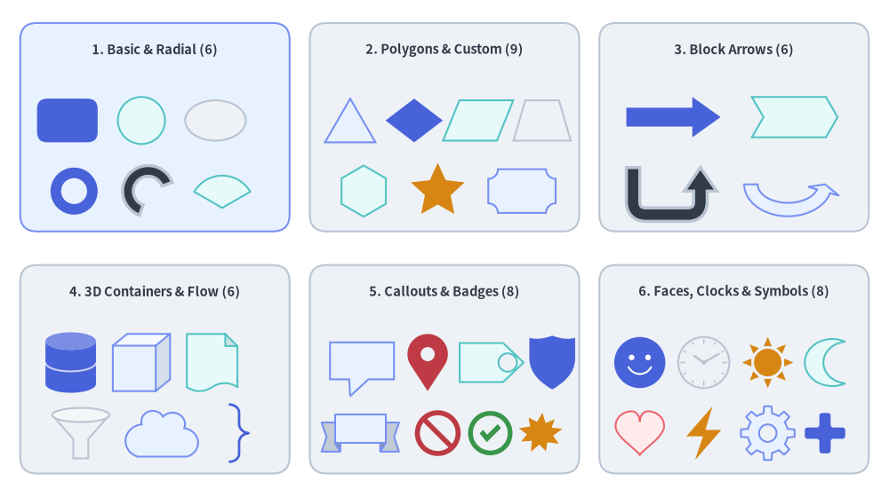
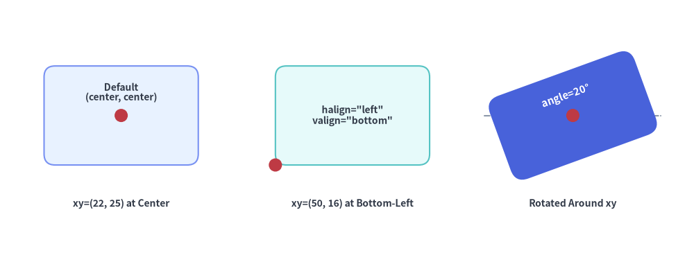
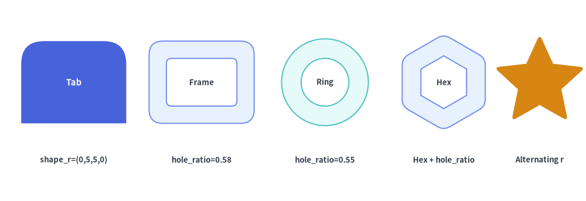
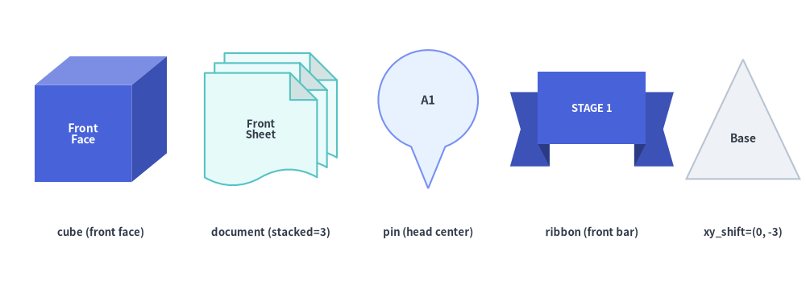

Shapes Overview
The drawlib.shapes module provides 43 declarative vector shape primitives organized into 6 semantic categories. Every shape integrates seamlessly with Drawlib's Style system, supporting unified fill and stroke tokens, rotational transforms (style.angle), corner rounding (style.shape_r), hollow cutouts (hole_ratio), and embedded typography (text and text_style).

Source Code
from drawlib.canvas import save, setup
from drawlib.shapes import (
arrow,
arrow_arc,
arrow_u,
brace,
bubblespeech,
checkmark,
chevron,
circle,
clock,
cloud,
cube,
cylinder,
document,
ellipse,
explosion,
face,
fan,
forbidden,
funnel,
gear,
heart,
lightning,
math_symbol,
moon,
parallelogram,
pin,
plaque,
rectangle,
regularpolygon,
rhombus,
ribbon,
shield,
star,
sun,
tag,
trapezoid,
triangle,
wedge,
)
from drawlib.styles import Styles
from drawlib.text import text
setup(width=132, height=74)
card_st = Styles.Neutral.patch(shape_r=2.5)
hdr_st = Styles.DarkBold.patch(text_size=10.5)
sub_st = Styles.Dark.patch(text_size=9.5)
# 3x2 Category Grid
cols = [23, 66, 109]
rows = [55, 19]
for r_idx, cy in enumerate(rows):
for c_idx, cx in enumerate(cols):
st = Styles.PrimaryNeutral.patch(shape_r=2.5) if (r_idx == 0 and c_idx == 0) else card_st
rectangle((cx, cy), width=40, height=31, style=st)
# 1. Basic & Radial (6 shapes)
text((23, 66.5), "1. Basic & Radial (6)", style=hdr_st)
rectangle((10, 56), width=9, height=6.5, style=Styles.PrimaryFlat.patch(shape_r=1.5))
circle((21, 56), radius=3.5, style=Styles.SecondaryNeutral)
ellipse((32, 56), width=9, height=6, style=Styles.Neutral)
circle((11, 45.5), radius=3.5, hole_ratio=0.55, style=Styles.PrimaryFlat)
wedge((22, 45.5), radius=3.8, width=1.6, angle_start=20, angle_end=250, style=Styles.DarkBold)
fan((33, 43.0), radius=4.8, angle_start=30, angle_end=150, style=Styles.SecondaryNeutral)
# 2. Polygons & Custom (9 shapes)
text((66, 66.5), "2. Polygons & Custom (9)", style=hdr_st)
triangle((52, 56), width=7.5, height=6.5, style=Styles.PrimaryNeutral)
rhombus((61.5, 56), width=8.5, height=6.5, style=Styles.PrimaryFlat)
parallelogram((71, 56), width=8, height=6, corner_angle=68, style=Styles.SecondaryNeutral)
trapezoid((80.5, 56), height=6, bottomedge_width=8.5, topedge_width=5, style=Styles.Neutral)
regularpolygon((54, 45.5), num_vertex=6, radius=3.8, style=Styles.SecondaryNeutral)
star((65, 45.5), num_vertex=5, radius_ext=4.2, radius_int=2.0, style=Styles.WarningFlat)
plaque((77.5, 45.5), width=10, height=6.5, variant="concave", style=Styles.PrimaryNeutral)
# 3. Block Arrows & Chevrons (6 shapes)
text((109, 66.5), "3. Block Arrows (6)", style=hdr_st)
arrow((93, 56.5), (107, 56.5), tail_width=2.8, head_width=6.0, head_length=4.2, style=Styles.PrimaryFlat)
chevron((118, 56.5), width=11, height=6.0, corner_angle=60, style=Styles.SecondaryNeutral)
arrow_u((99, 45.5), width=10, height=7.0, tail_width=2.0, head_width=4.8, head_length=3.5, style=Styles.DarkBold.patch(shape_r=2))
arrow_arc((117, 46.5), width=11, height=7.5, tail_width=2.0, head_width=4.8, head_angle=16, angle_start=180, angle_end=0, style=Styles.PrimaryNeutral)
# 4. 3D Containers & Grouping (6 shapes)
text((23, 30.5), "4. 3D Containers & Flow (6)", style=hdr_st)
cylinder((10.5, 20), width=7.5, height=9.0, disks=2, style=Styles.PrimaryFlat)
cube((21, 20), width=8.5, height=8.5, style=Styles.PrimaryNeutral)
document((31.5, 20), width=7.5, height=8.5, variant="folded_wave", style=Styles.SecondaryNeutral)
funnel((12, 9.5), width=8.5, height=7.5, variant="3d", style=Styles.Neutral)
cloud((24, 9.5), width=11, height=7.0, variant="flat", style=Styles.PrimaryNeutral)
brace((35.5, 9.5), width=2.8, height=8.5, symbol="}", style=Styles.PrimaryBold.patch(line_width=2.0))
# 5. Callouts, Badges & Status (8 shapes)
text((66, 30.5), "5. Callouts & Badges (8)", style=hdr_st)
bubblespeech((49, 17.5), width=9.5, height=5.5, tail_edge="bottom", tail_start_ratio=0.3, tail_end_ratio=0.6, tail_vertex_xy=(52, 15.0), style=Styles.PrimaryNeutral)
pin((63.5, 20), width=6.0, height=8.5, variant="teardrop", hole_ratio=0.35, style=Styles.DangerFlat)
tag((73, 20), width=9.5, height=5.8, variant="angled", style=Styles.SecondaryNeutral)
shield((82, 20), width=6.8, height=8.0, variant="classic", style=Styles.PrimaryFlat)
ribbon((53.5, 9.5), width=11.5, height=5.5, variant="down", style=Styles.PrimaryNeutral)
forbidden((65.0, 9.5), radius=3.4, variant="slash", style=Styles.DangerFlat)
checkmark((72.8, 9.5), width=6.6, variant="circle", style=Styles.SuccessFlat)
explosion((80.2, 9.5), width=6.8, height=6.2, variant="irregular", style=Styles.WarningFlat)
# 6. Faces, Clocks & Symbols (8 shapes)
text((109, 30.5), "6. Faces, Clocks & Symbols (8)", style=hdr_st)
face((95, 20), radius=3.8, variant="smile", style=Styles.PrimaryFlat)
clock((104.5, 20), radius=3.8, variant="ticks", hour=10, minute=10, style=Styles.Neutral)
sun((114, 20), radius=3.8, variant="rays", style=Styles.WarningFlat)
moon((122.5, 20), width=6.0, height=7.0, variant="crescent", style=Styles.SecondaryNeutral)
heart((95, 9.5), width=7.2, height=6.5, variant="standard", style=Styles.DangerNeutral)
lightning((104.5, 9.5), width=5.2, height=8.0, variant="standard", style=Styles.WarningFlat)
gear((114, 9.5), num_teeth=8, radius_ext=4.0, radius_int=3.0, hole_radius=1.3, style=Styles.PrimaryNeutral)
math_symbol((122.5, 9.5), symbol="+", width=6.0, style=Styles.PrimaryFlat.patch(shape_r=0.4))
save()
1. The 6 Semantic Categories of drawlib.shapes
All 43 functions are re-exported directly from drawlib.shapes (from drawlib.shapes import rectangle, circle, ...) and are documented across six dedicated category guides:
| Category Guide | Count | Included Shape Functions | Primary Architectural & Diagramming Roles |
|---|---|---|---|
| 1. Basic & Radial Shapes | 6 | rectangle, circle, ellipse, wedge, fan, arc |
Service cards, rounded containers, nodes, hollow donut rings, angular sectors, FOV cones, and orbital arcs. |
| 2. Polygons & Custom Paths | 9 | triangle, parallelogram, trapezoid, rhombus, regularpolygon, star, plaque, polygon, shape |
Decision diamonds, I/O parallelograms, pooling layers, hexagon pods, stars, certificate plaques, and custom Bézier paths. |
| 3. Block Arrows & Chevrons | 6 | arrow, arrow_l, arrow_u, arrow_arc, arrow_polyline, chevron |
Bold 2D data flow pipelines, sequential process chevrons, 90° L-turns, 180° U-turn retries, circular flows, and multi-joint routes. |
| 4. 3D Containers, Flow & Grouping | 6 | cylinder, cube, document, funnel, cloud, brace |
Multi-disk databases, 3D compute blocks, stacked config/log documents, ETL filtering funnels, cloud/VPC boundaries, and curly/square/round grouping brackets. |
| 5. Callouts, Badges & Status | 8 | bubblespeech, pin, tag, ribbon, shield, forbidden, checkmark, explosion |
Speech bubble annotations, map/pointer pins, Git release tags, milestone ribbons, WAF/IAM shields, allow/deny gates, and alert bursts. |
| 6. Faces, Clocks, Symbols & Operators | 8 | face, clock, sun, moon, heart, lightning, gear, math_symbol |
User/threat personas, analog & 7-segment digital clocks, day/night schedules, healthchecks, serverless triggers, worker gears, and visual equations. |
Alphabetical Function Reference (A–Z)
Use this lookup table to check any shape's category guide, coordinate anchor, and supported modifiers at a glance:
| Function | Category Guide | Anchor xy |
hole_ratio |
style.shape_r |
text Support |
Key Variants / Parameters |
|---|---|---|---|---|---|---|
arc |
Basic & Radial | Center (cx, cy) |
— | — | Yes | width, height, angle_start, angle_end |
arrow |
Block Arrows | xy1 -> xy2 |
— | — | Yes (auto-rotated) | tail_width, head_width, head_length, head |
arrow_arc |
Block Arrows | Center (cx, cy) |
— | — | No (text()) |
width, height, head_angle, angle_start, angle_end |
arrow_l |
Block Arrows | Center (cx, cy) |
— | Elbow float | (r,) |
No (text()) |
width, height, tail_width, head_width, head_length |
arrow_polyline |
Block Arrows | xys list |
— | Joint float | tuple |
No (text()) |
xys, tail_width, head_width, head_length, head |
arrow_u |
Block Arrows | Center (cx, cy) |
— | Turn float | (r1, r2) |
No (text()) |
width, height, tail_width, head_width, head_length |
brace |
3D Containers | Center (cx, cy) |
— | Square [] corners |
Yes | symbol ("{}", "[]", "()"), direction, tip_ratio |
bubblespeech |
Callouts & Badges | Bottom-Left (x0, y0) |
— | — | Yes | tail_edge, tail_start_ratio, tail_end_ratio, tail_vertex_xy |
checkmark |
Callouts & Badges | Center (cx, cy) |
— | Tick corners (float) |
Yes | variant ("standard", "circle", "solid_circle"), thickness_ratio |
chevron |
Block Arrows | Center (cx, cy) |
— | float | 6-tuple |
Yes | width, height, corner_angle, mirror |
circle |
Basic & Radial | Center (cx, cy) |
Yes (0, 1) |
— | Yes | radius, hole_ratio |
clock |
Faces & Symbols | Center (cx, cy) |
— | — | Yes | variant ("standard", "ticks", "alarm", "stopwatch", "digital"), hour, minute |
cloud |
3D Containers | Center (cx, cy) |
— | — | Yes | variant ("standard", "flat", "fluffy", "simple"), bump_ratio |
cube |
3D Containers | Center (cx, cy) |
— | — | Yes (front face) | width, height, depth_ratio |
cylinder |
3D Containers | Center (cx, cy) |
— | — | Yes | width, height, disks |
document |
3D Containers | Center (cx, cy) |
— | — | Yes (front sheet) | variant ("wave", "folded", "double_wave", "folded_wave"), stacked |
ellipse |
Basic & Radial | Center (cx, cy) |
Yes (0, 1) |
— | Yes | width, height, hole_ratio |
explosion |
Callouts & Badges | Center (cx, cy) |
— | float | tuple |
Yes | variant ("standard", "irregular", "heavy", "wild", "curved", "comic") |
face |
Faces & Symbols | Center (cx, cy) |
— | — | Yes | variant ("smile", "neutral", "surprised", "sad", "angry", "dizzy", "dead", "skull", "devil") |
fan |
Basic & Radial | Center (cx, cy) |
— | — | Yes | radius, angle_start, angle_end |
forbidden |
Callouts & Badges | Center (cx, cy) |
— | — | Yes | variant ("slash", "backslash", "cross", "no_entry"), thickness_ratio |
funnel |
3D Containers | Center (cx, cy) |
— | — | Yes | variant ("standard", "3d", "curved"), neck_width_ratio, neck_height_ratio |
gear |
Faces & Symbols | Center (cx, cy) |
hole_radius |
float | (4N)-tuple |
Yes | num_teeth, radius_ext, radius_int, tooth_ext_ratio, tooth_int_ratio |
heart |
Faces & Symbols | Center (cx, cy) |
— | — | Yes (optical) | variant ("standard", "broken") |
lightning |
Faces & Symbols | Center (cx, cy) |
— | float | tuple |
Yes | variant ("standard", "flat", "double", "flat_double", "angled", "slanted"), mirror |
math_symbol |
Faces & Symbols | Center (cx, cy) |
— | float |
Yes | symbol ("+", "-", "×", "÷", "=", "≠"), thickness_ratio |
moon |
Faces & Symbols | Center (cx, cy) |
— | — | Yes (optical) | variant ("crescent", "thin", "waxing", "half"), mirror |
parallelogram |
Polygons & Custom | Center (cx, cy) |
Yes (0, 1) |
float | 4-tuple |
Yes | width, height, corner_angle |
pin |
Callouts & Badges | Center (cx, cy) |
Yes (0, 0.8) |
— | Yes (head center) | variant ("pointer", "teardrop", "pin"), hole_ratio |
plaque |
Polygons & Custom | Center (cx, cy) |
— | float | tuple |
Yes | variant ("concave", "chamfered", "notched"), cut_ratio |
polygon |
Polygons & Custom | xys list |
— | float | N-tuple |
Yes (bbox center) | xys=[(x1, y1), (x2, y2), ...] |
rectangle |
Basic & Radial | Center (cx, cy) |
Yes (0, 1) |
float | 4-tuple |
Yes | width, height, hole_ratio |
regularpolygon |
Polygons & Custom | Center (cx, cy) |
Yes (0, 1) |
float | N-tuple |
Yes | num_vertex, radius, hole_ratio |
rhombus |
Polygons & Custom | Center (cx, cy) |
Yes (0, 1) |
float | 4-tuple |
Yes | width, height, hole_ratio |
ribbon |
Callouts & Badges | Center (cx, cy) |
— | — | Yes (front banner) | variant ("down", "up", "flat"), tail_width_ratio, drop_ratio |
shape |
Polygons & Custom | Center (cx, cy) |
— | — | Yes | path_points (lines, quadratic & cubic Béziers), is_default_center |
shield |
Callouts & Badges | Center (cx, cy) |
— | — | Yes (optical) | variant ("classic", "flat", "round") |
star |
Polygons & Custom | Center (cx, cy) |
— | float | (2N)-tuple |
Yes | num_vertex, radius_ext, radius_int |
sun |
Faces & Symbols | Center (cx, cy) |
— | — | Yes | variant ("rays", "ring", "beams"), num_rays |
tag |
Callouts & Badges | Center (cx, cy) |
Yes (0, 0.7) |
float | tuple |
Yes (optical) | variant ("angled", "chamfered", "rounded"), mirror, hole_ratio |
trapezoid |
Polygons & Custom | Center (cx, cy) |
Yes (0, 1) |
float | 4-tuple |
Yes | height, bottomedge_width, topedge_width, topedge_x |
triangle |
Polygons & Custom | Center (cx, cy) |
Yes (0, 1) |
float | 3-tuple |
Yes | width, height, topvertex_x |
wedge |
Basic & Radial | Center (cx, cy) |
— | — | Yes | radius, width, angle_start, angle_end |
2. Coordinate Anchors & Alignment (xy, halign, valign)
Understanding how xy anchors a shape on the Cartesian canvas (where (0, 0) is the bottom-left corner) is essential for accurate layout:
- Center Anchoring by Default (
halign="center", valign="center"): All built-in preset styles (Styles.Neutral,Styles.PrimaryFlat, etc.) sethalign="center"andvalign="center". For 39 of the 43 shape functions, passingxy=(cx, cy)places the exact geometric center of the shape's unrotated bounding box (or radial circle) at(cx, cy). - Custom Box Alignment (
style.patch(halign=..., valign=...)): On bounding-box shapes (rectangle,ellipse,triangle,parallelogram,trapezoid,rhombus,plaque,chevron,cylinder,cube,document,funnel,cloud,brace,pin,tag,ribbon,shield,checkmark,explosion,moon,heart,lightning,math_symbol,shape), you can overridehalign("left","center","right") andvalign("bottom","center","top") soxyanchors a specific corner or edge of the shape. - Special Anchors (
bubblespeech,arrow,polygon,arrow_polyline):bubblespeech(xy, ...): Always interpretsxyas the bottom-left corner(x0, y0)of the rectangular bubble body so thattail_vertex_xycan target an exact coordinate without being shifted by alignment transforms.arrow(xy1, xy2, ...): Defined directly by its tail coordinatexy1and arrowhead tip coordinatexy2.polygon(xys, ...)&arrow_polyline(xys, ...): Defined directly by their explicit list of canvas verticesxys=[(x1, y1), (x2, y2), ...].
from drawlib.canvas import save, setup
from drawlib.lines import line
from drawlib.shapes import circle, rectangle
from drawlib.styles import Styles
from drawlib.text import text
setup(width=126, height=46)
lbl = Styles.DarkBold.patch(text_size=10.0)
red_dot = Styles.DangerFlat
# 1. Default Preset Style: halign="center", valign="center"
pt1 = (22, 25)
rectangle(
pt1,
width=28,
height=18,
style=Styles.PrimaryNeutral.patch(shape_r=2),
text="Default\n(center, center)",
text_style=lbl.patch(xy_shift=(0, 4.2)),
)
circle(pt1, radius=1.2, style=red_dot)
text((22, 9), "xy=(22, 25) at Center", style=lbl)
# 2. Bottom-Left Anchor: halign="left", valign="bottom"
pt2 = (50, 16)
rectangle(
pt2,
width=28,
height=18,
style=Styles.SecondaryNeutral.patch(shape_r=2, halign="left", valign="bottom"),
text='halign="left"\nvalign="bottom"',
text_style=lbl,
)
circle(pt2, radius=1.2, style=red_dot)
text((64, 9), "xy=(50, 16) at Bottom-Left", style=lbl)
# 3. Rotation around Center: style.patch(angle=20)
pt3 = (104, 25)
line((88, 25), (120, 25), style=Styles.MutedDashed)
rectangle(
pt3,
width=28,
height=16,
style=Styles.PrimaryFlat.patch(shape_r=2.5, angle=20),
text="angle=20°",
text_style=Styles.WhiteBold.patch(text_size=10.5, xy_shift=(0, 3.8)),
)
circle(pt3, radius=1.2, style=red_dot)
text((104, 9), "Rotated Around xy", style=lbl)
save()

3. Shared Geometry Modifiers (shape_r, hole_ratio, mirror)
3.1. Corner & Vertex Rounding (style.shape_r)
Many polygonal and badge primitives read style.shape_r to fillet sharp vertices into smooth circular arcs:
- Uniform Rounding (
shape_r=3.0): Passing a singlefloatrounds every vertex of the shape with the same radius. - Per-Vertex Rounding (
shape_r=(r1, r2, ...)): Passing a tuple of floats assigns an independent radius to each vertex in order (0keeps a vertex sharp):rectangle: 4-tuple(bottom_left, top_left, top_right, bottom_right).triangle: 3-tuple(bottom_left, top_apex, bottom_right).parallelogram,trapezoid,rhombus: 4-tuple starting from bottom-left (rhombusstarts from left vertex).regularpolygon:N-tuple starting from the top vertex and proceeding counterclockwise.star:(2 * N)-tuple alternating(outer_tip_0, inner_valley_0, outer_tip_1, inner_valley_1, ...).arrow_u: 2-tuple(first_turn_r, second_turn_r).arrow_polyline:(len(xys) - 2)-tuple for each intermediate joint along the polyline.
3.2. Hollow Cutouts (hole_ratio)
Passing hole_ratio creates a transparent inner cutout using a single compound vector path (Path.make_compound_path), so background grids and underlying elements remain visible through the hole:
- Concentric Frame / Ring Cutouts (
0.0 < hole_ratio < 1.0): Supported onrectangle,circle,ellipse,triangle,parallelogram,trapezoid,rhombus, andregularpolygon. On rounded polygons (shape_r > 0), both the outer contour and the inner cutout contour are smoothly rounded. - Badge Punch Holes: Supported on
pin(0.0 < hole_ratio < 0.8) andtag(0.0 < hole_ratio < 0.7) to punch a circular mounting hole in the pin head or tag collar.
from drawlib.canvas import save, setup
from drawlib.shapes import circle, rectangle, regularpolygon, rhombus, star
from drawlib.styles import Styles
from drawlib.text import text
setup(width=128, height=44)
lbl = Styles.DarkBold.patch(text_size=9.5)
# 1. Per-corner rounded rectangle tab
rectangle(
(16, 26),
width=23,
height=18,
style=Styles.PrimaryFlat.patch(shape_r=(0, 5, 5, 0)),
text="Tab",
text_style=Styles.WhiteBold.patch(text_size=10.5),
)
text((16, 9), "shape_r=(0,5,5,0)", style=lbl)
# 2. Hollow rounded rectangle frame
rectangle(
(44, 26),
width=23,
height=18,
hole_ratio=0.58,
style=Styles.PrimaryNeutral.patch(shape_r=3),
text="Frame",
text_style=lbl,
)
text((44, 9), "hole_ratio=0.58", style=lbl)
# 3. Hollow circular ring
circle(
(71, 26),
radius=9.5,
hole_ratio=0.55,
style=Styles.SecondaryNeutral,
text="Ring",
text_style=lbl,
)
text((71, 9), "hole_ratio=0.55", style=lbl)
# 4. Hollow rounded hexagon
regularpolygon(
(97, 26),
num_vertex=6,
radius=10.5,
hole_ratio=0.55,
style=Styles.PrimaryNeutral.patch(shape_r=1.5),
text="Hex",
text_style=lbl,
)
text((97, 9), "Hex + hole_ratio", style=lbl)
# 5. Per-vertex star (rounded tips, sharp valleys)
star(
(118, 26),
num_vertex=5,
radius_ext=10.5,
radius_int=5.0,
style=Styles.WarningFlat.patch(shape_r=(1.2, 0) * 5),
)
text((118, 9), "Alternating r", style=lbl)
save()

4. Embedded Text Labels & Optical Positioning (text, text_style)
Almost all shapes (39 out of 43, excluding arrow_l, arrow_u, arrow_arc, and arrow_polyline) accept text: str = "" and text_style: Style | None = None:
- Automatic Rotation Inheritance: When
style.angleis set on a shape, the embeddedtextautomatically rotates by the same angle unless overridden viatext_style=Styles.DarkBold.patch(angle=0). - Optical Centering on 3D & Asymmetric Shapes:
cube: Centerstexton the front rectangular face so labels never collide with the 3D top/side oblique seams.document: Centerstexton the front-most sheet and shifts it away from bottom wave troughs and top-right dog-ear folds.pin,shield,heart,moon,ribbon,tag: Automatically shift the default text anchor to the widest optical body region (e.g. the circular head ofpinor the raised front banner ofribbon).
- Fine-Tuning Label Offset (
text_style.xy_shift): Passxy_shift=(dx, dy)ontext_styleto nudge the label relative to the shape center (the shift vector also rotates with the shape whenstyle.angleis non-zero).
from drawlib.canvas import save, setup
from drawlib.shapes import cube, document, pin, ribbon, triangle
from drawlib.styles import Styles
from drawlib.text import text
setup(width=128, height=46)
lbl_cap = Styles.DarkBold.patch(text_size=9.5)
# 1. Cube: auto-centered on front face
cube(
(16, 27),
width=21,
height=20,
depth_ratio=0.28,
style=Styles.PrimaryFlat,
text="Front\nFace",
text_style=Styles.WhiteBold.patch(text_size=10.0),
)
text((16, 9), "cube (front face)", style=lbl_cap)
# 2. Stacked Document: auto-centered on front sheet
document(
(43, 27),
width=21,
height=21,
variant="folded_wave",
stacked=3,
style=Styles.SecondaryNeutral,
text="Front\nSheet",
text_style=Styles.DarkBold.patch(text_size=9.5),
)
text((43, 9), "document (stacked=3)", style=lbl_cap)
# 3. Pin: auto-centered in circular head
pin(
(68, 27),
width=16,
height=22,
variant="pointer",
style=Styles.PrimaryNeutral,
text="A1",
text_style=Styles.DarkBold.patch(text_size=10.5),
)
text((68, 9), "pin (head center)", style=lbl_cap)
# 4. Ribbon: auto-centered on raised front banner
ribbon(
(94, 27),
width=26,
height=15,
variant="down",
style=Styles.PrimaryFlat,
text="STAGE 1",
text_style=Styles.WhiteBold.patch(text_size=9.5),
)
text((94, 9), "ribbon (front bar)", style=lbl_cap)
# 5. Triangle with manual xy_shift=(0, -3) toward wider base
triangle(
(118, 27),
width=18,
height=19,
style=Styles.Neutral,
text="Base",
text_style=Styles.DarkBold.patch(text_size=10.0, xy_shift=(0, -3.0)),
)
text((118, 9), "xy_shift=(0, -3)", style=lbl_cap)
save()
